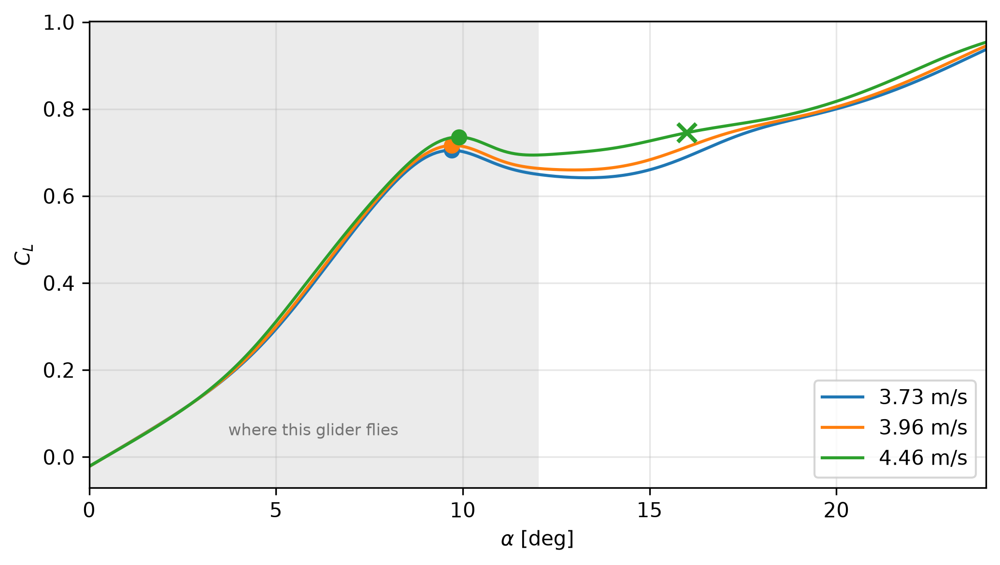

The lift curve taken out to 24° rather than the 16° the stall search used, at the three speeds this chapter trims at, to establish whether it has one peak or more than one.
NoteAssumed
Nothing new — the chapter’s own polars(), read over a wider range of angle than any entry has asked for before.
Show code
a = np.linspace(0, 24, 241)curves = {V: np.array(polars(a, V=V)["CL"]) for V in [3.73, 3.96, 4.46]}def peaks(CL):"""Every local maximum, in order. The first one is the stall."""return [i for i inrange(1, len(CL) -1)if CL[i] >= CL[i -1] and CL[i] > CL[i +1]]rows = []for V, CL in curves.items(): p = peaks(CL) g =int(np.argmax(CL[a <=16])) # what a global search over 0-16 finds rows.append((V, a[p[0]], CL[p[0]], a[g], CL[a <=16][g], len(p)))worst =max(r[3] - r[1] for r in rows)
Answer. The wing stalls between 9.7° and 9.9° across the speeds this chapter trims at (Figure 1).
There is exactly one peak, but the curve does not simply fall away after it: lift dips, then climbs steadily again and is still rising at the end of the sweep, by then above anything it reached before the stall. That renewed rise is deep post-stall behaviour, outside the attached-flow regime the section data represents, and not a condition this glider can reach or would want to.
It matters because taking the largest lift coefficient over a range is the obvious way to find a stall, and here it finds the wrong thing. At the highest of these speeds the climbing branch has already overtaken the peak before the search window ends, so a global maximum reports the stall several degrees late and at the range boundary — a value that would move if the window did, which is the signature of the bug. The stall search now takes the first turning point instead, which does not care where the window ends.
Nothing published moved: every entry that quotes a stall angle does so at one of the two lower speeds, where the two methods happen to agree. The error only appears at the higher trim speed of a heavier glider — exactly the case the next entry needed.
Show code
fig, ax = plt.subplots(figsize=(7, 4))for (V, CL), colour inzip(curves.items(), ["C0", "C1", "C2"]): p = peaks(CL) ax.plot(a, CL, colour, lw=1.5, label=f"{V:.2f} m/s") ax.plot(a[p[0]], CL[p[0]], "o", color=colour, ms=7) g =int(np.argmax(CL[a <=16])) # what a global search would pickifabs(a[g] - a[p[0]]) >0.5: ax.plot(a[g], CL[a <=16][g], "x", color=colour, ms=9, mew=2)ax.axvspan(0, 12, color="0.92", zorder=0)ax.text(6, 0.05, "where this glider flies", ha="center", fontsize=8, color="0.45")ax.set_xlabel(r"$\alpha$[deg]"); ax.set_ylabel(r"$C_L$")ax.set_xlim(0, 24); ax.grid(alpha=0.3); ax.legend()plt.tight_layout()plt.show()

Figure 1: Lift curve out to 24° at the three trim speeds. The filled marker is the stall — the first time lift stops rising. The cross is what a global maximum over 0–16° returns at the highest speed: the boundary of the search, on the post-stall branch.
NoteThe method, as called
def stall(V, alpha=None):""" Angle of attack where lift first stops rising, and the CL there. The FIRST peak, deliberately, not the global maximum. NeuralFoil's curve turns over near 10 degrees, dips, and then climbs again well past 20 -- deep post-stall behaviour the model is not meant to represent. A global argmax picks that second branch at some speeds and reports a stall angle of 16-24 degrees, which is nonsense for this wing. """ a = np.linspace(0, 24, 241) if alpha isNoneelse alpha CL = np.array(polars(a, V=V)["CL"])for i inrange(1, len(a) -1):if CL[i] >= CL[i -1] and CL[i] > CL[i +1]:return a[i], float(CL[i])return a[int(np.argmax(CL))], float(CL.max())